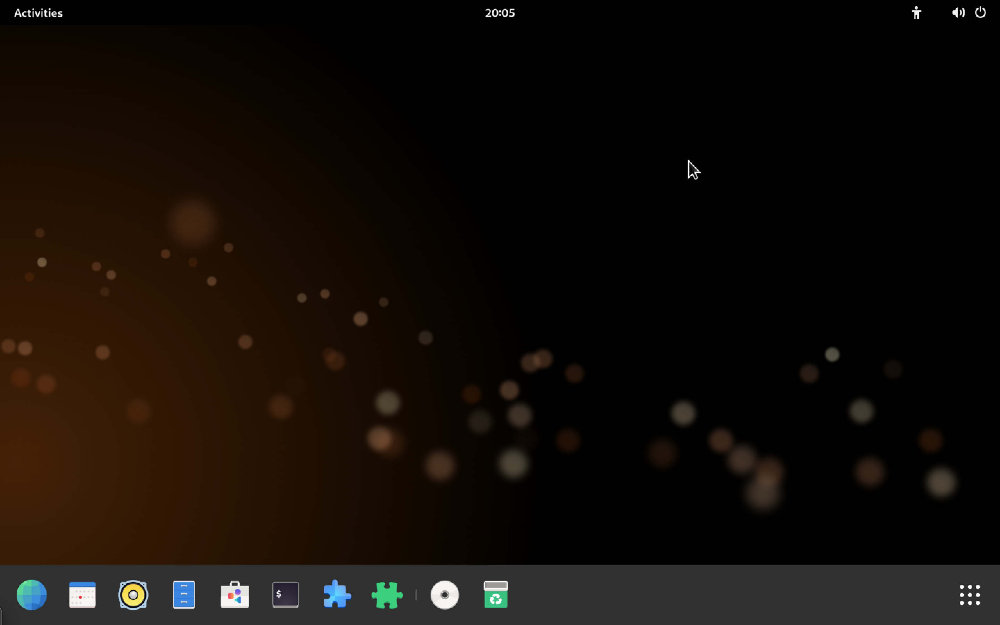

home
links
report a glitch
projects
mirrors
news
Welcome to the future,the past, and everything inbetween
Orange OS is a Operating System created by the Orange group, a team of programmers on a mission to make fast, reliable software, tuned to your style. free always.
links
